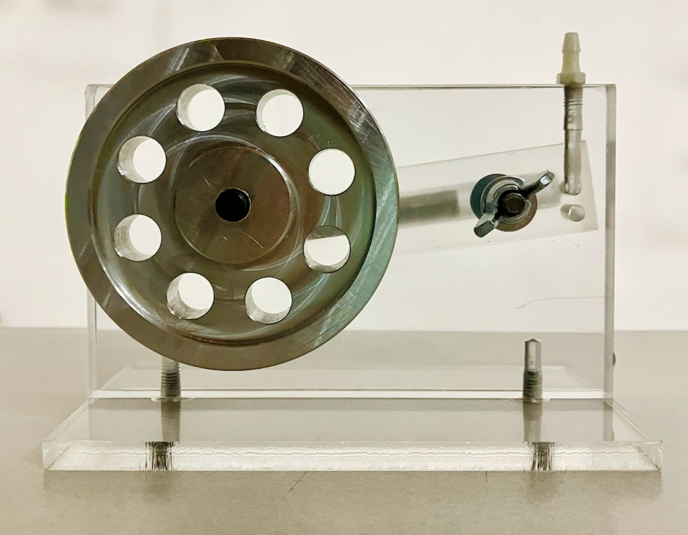
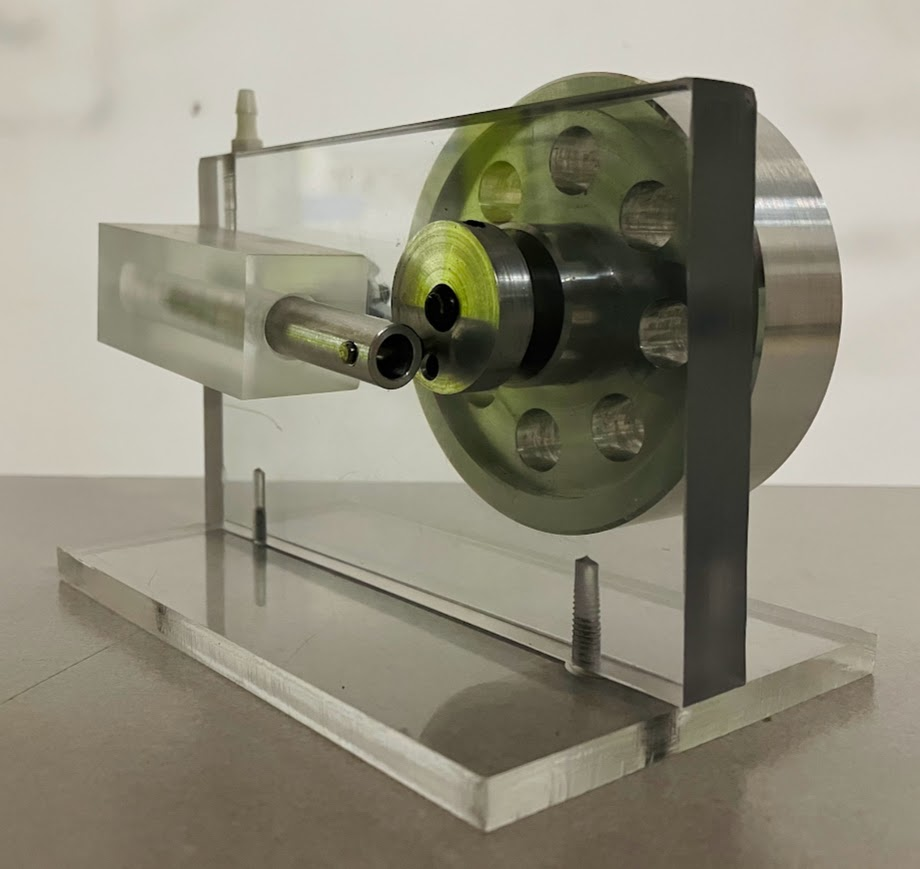
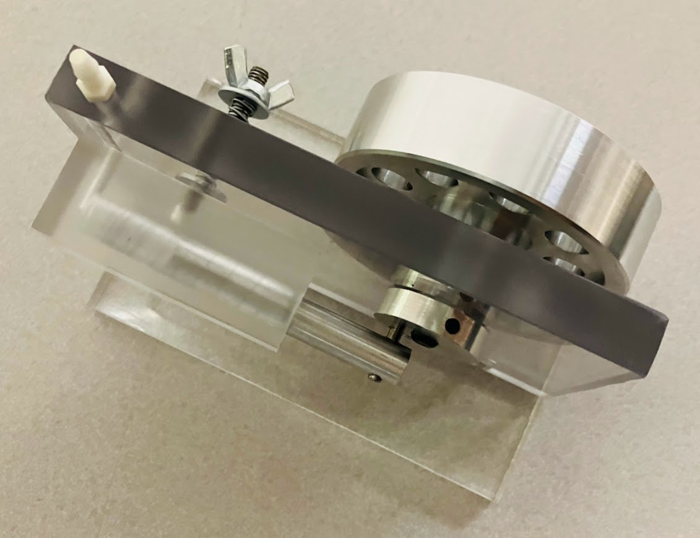
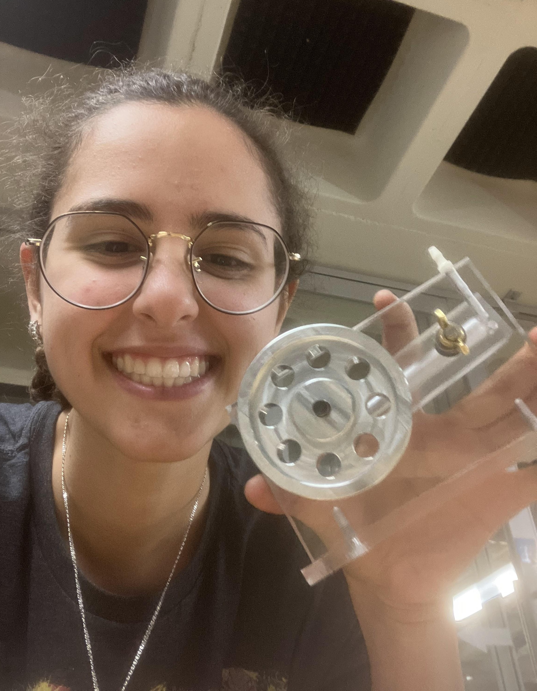
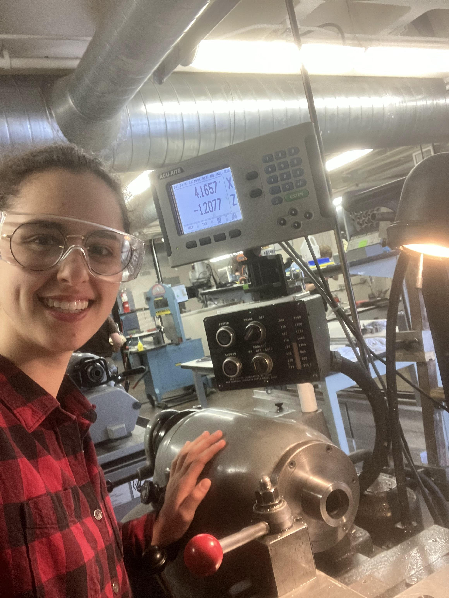
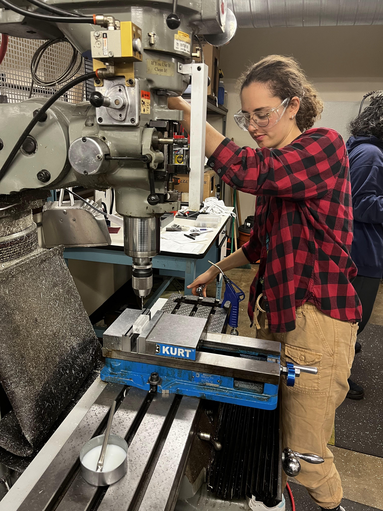
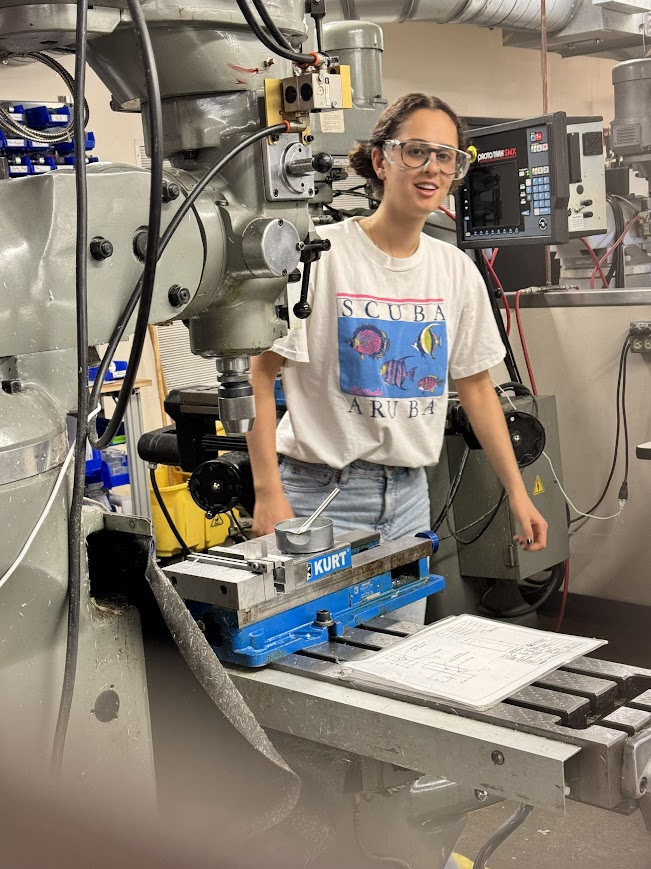

✕
✕
OCT – DEC 2024
Wobbler Engine
The goal of this project was to practice fabrication skills and build knowledge about why appropriate and clear CAD models/drawings are significant as well as highlight the strengths and limitations of machine shop manufacturing. I collaborated with 3 other peers to manufacture 6 different parts using the lathe and mill and assemble a wobbler engine designed to run on 10 psi and below. Additionally, I worked on troubleshooting/tuning the engine after assembly to help it run faster and kept the group organized with a clear line of communication. Because of this, we were the first group out of 40 to fully finish our parts and test our engine. At the end we got to run it in a class competition. It was wonderful to gain more hands-on time in the machine shop and watch drawings become a reality!




First time assembling the engine after all the parts were completed!
Top-view assembly, exploded view, and BOM.
Drawings Used to Machine Parts. The Flywheel was CNCed and then Refined on the Machines.
FEB – DEC 2025
Machine Shop Assistant
In the end, this project came full circle with me working as a Machine Shop Assistant for the same course, teaching and aiding student groups of 1–5 people to fabricate these parts on the lathe and mill. As a Shop Assistant, I prioritized safety, explanation, and giving students the agency to learn and manufacture as much as possible. My teaching approach was to provide clear verbal direction, rarely touch the parts, and continuously check in/answer questions so students gained the most from their time with me and could return to the shop more confident from their hands-on experience. Supporting my peers in this 1-on-1 setting was a great exercise in leadership and refining my lathe, mill, and general fabrication knowledge. For the Spring and Fall 2025 semesters, I was proud to work with over 100 groups for 70 sessions, manufacturing the 6 different parts.

!!

▲